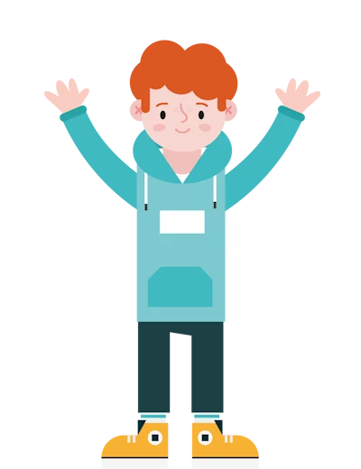
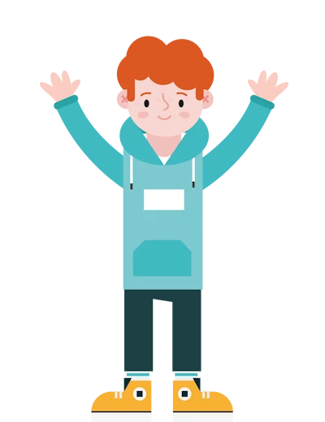

CoderDojo is a global movement of free volunteer coding clubs where young people learn to code, hack, develop websites, apps, games & more!
CarrickDojo has been running in Carrick-On-Shannon since January 2015. We want to bring to the community an environment where children from 7 to 17 years old can share passions for coding, computing and gain new learning experience.
We work to encourage creativity and having fun in a relaxed, social environment while our Ninjas learn to communicate using the languages of the future.
 
